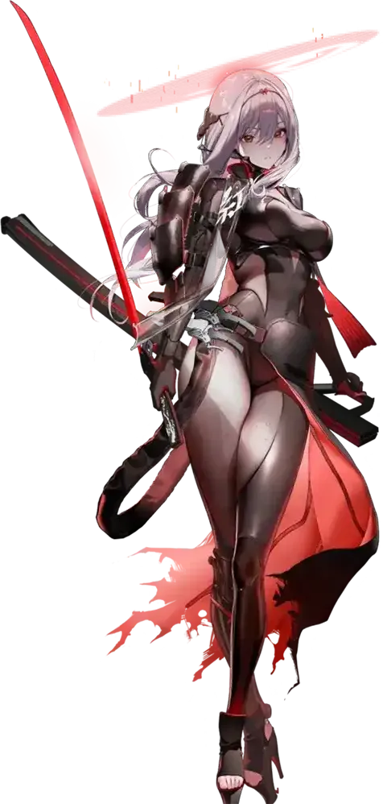
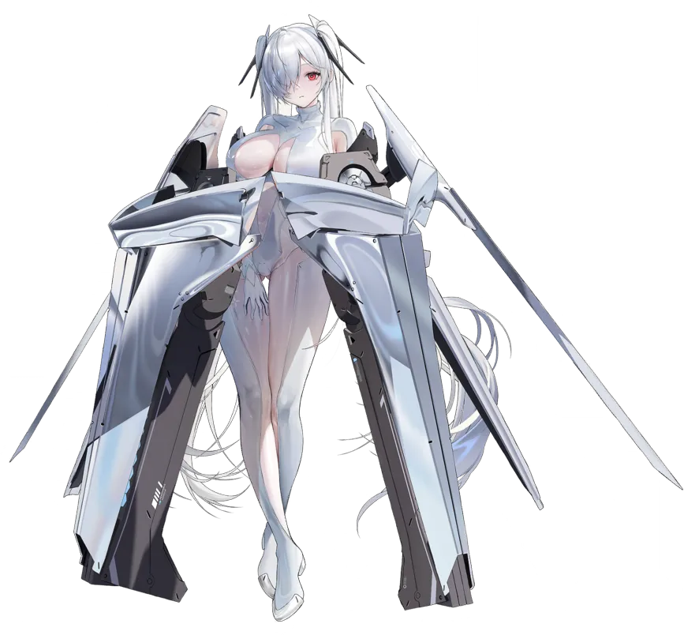
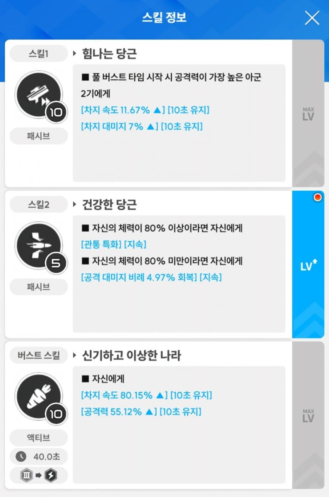
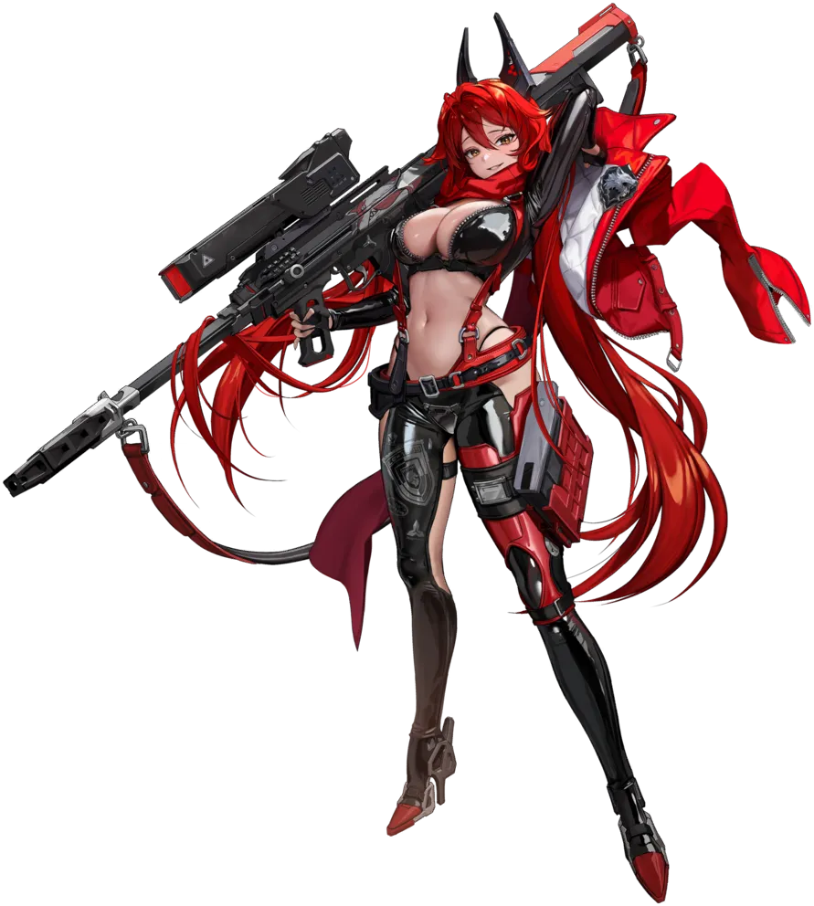

1. 흑련
종결: 4우코, 4공증, 1차속, 1장탄 + @
중요도: 우코 >> 공증 >= 1장탄, 1차속 > 그 외
스토리면 스토리, 보스전이면 보스전 등 만능캐 흑북이
1장탄을 쓰면 조합 자유도가 높아진다는 장점이 있어서 개인적으로는 3차속에 1장탄을 선택하는 것이 괜춘해보임!
특히, 메스트&앵커의 등장으로 1버에 볼륨을 쓰는 것이 꽤 괜찮은 선택이 되었으므로 1장탄은 사실상 필수가 되었다.
4우 4공 1장 1차속 10유효만 맞춰도 충분히 강하므로 12유효를 노릴지 10유효를 노릴지는 선택임!
@ 자리에는 크댐이나 크확, 차속을 뽑으면 된다. 메스트&앵커와 조합하는 경우가 거의 대부분이므로 크댐 밸류가 높고, 그 다음으론 크확이나 차속을 뽑으면 되겠다.

2. 신데렐라
종결: 4우코, 4공증, 2장탄 + @
@ 자리에는 장탄이나 크확 및 크댐. 다만, @를 챙길 수 있으면 좋은 거고 4우 4공 2장만 맞춰도 충분히 강력하다.
중요도: 1장탄 >> 우코 >> 공증 > 기타옵
보스전 GOAT.
장탄을 진짜 최소한 하나를 챙겨야 하는 이유는 0장탄과 1장탄의 딜 차이는 하늘과 땅 차이이므로 장탄옵은 반드시 챙겨야 한다!
기본적으로 방어형에 채력의 일부가 공증으로 치환되므로 공증 효율은 낮은 편이지만 자바리옵(크리) 보단 낫다.
버스트 딜 비중이 꽤나 높은 편이므로 @자리에 크리옵 챙기면 나름 재미를 쏠쏠하게 본다.
3. 앨리스
종결 - 선택지 2개 중 하나 선택
1. 4우코, 4공증, 2장탄, 2차속
2. 4우코, 3공증, 3장탄, 2차속
메스트&앵커의 등장으로 정석이 2번에서 1번으로 바뀌었다. 재장전 특이점을 넘기면 무한탄창이 되므로 현시점에선 4공 + 2장이 더 좋은 조합임.
중요도: 2차속 > 장탄, 우코 >= 공증

앨리스는 1스, 3스 10렙 기준 차속 91.82%를 챙길 수 있다. 그렇기에 차속 옵션 2줄로 앨리스 단독 차속 99% 이상을 반드시 챙겨야 한다!
아무리 못해도 2장탄은 필수. 일단, 2장탄, 2차속을 한 뒤에 생각하자.
ㄴ 장탄 수치는 최소 60.71% 이상(한 부위 당 +4발)
cf. 77% 이상부터 한 부위 당 +5발
이후엔 오버옵을 어떻게 쓸지가 갈림(물론, 4우코는 필수).
1번 선택지: 4공증, 2장탄
장탄은 14, 15, 16발이 가능(대부분 14발)
메스트&앵커 + 흑앨이 정석으로 쓰이므로 이제는 정석 빌드가 된 2장탄 빌드.
2번 선택지: 3공증, 3장탄
장탄은 18~21발이 가능(대부분 18발)
이전엔 가장 무난하다고 평가되었으나, 메스트&앵커 때문에 애매해짐. 물론, 보스 속성에 따라 앨리스가 무한 탄창이 안되는 조합이 짜지는 경우가 존재할테지만 4공에 2장 쓰는 게 더 좋아보인다.

4. 레드후드
종결: 4우코, 4공증, 1장탄, 차속 또는 차댐 합 3개
중요도: 우코 > 1장탄 > 공증 > 차속 및 차댐
만능 그자체.
장탄을 달고 있냐 안 달고 있냐의 차이가 극심한 니케2. 버스트 충전에 있어서 장탄옵 유무의 차이는 하늘과 땅 차이이므로 반드시 하나는 달아줘야 한다. 다만, 장탄옵 2개 이상부터는 무효옵. 하나만 남기고 버리자.
통상 딜러로서도 괜찮은 편이지만 강한 딜러들이 많이 나와서 님들이 고인물이 되면 1버 버퍼로서 활약하므로 공증의 중요도는 낮아진 편이다.
전격 속성 랩쳐 상대로는 좋기 때문에 우코는 반드시 챙겨줘야 한다.
차속이나 차댐은 달아주면 좋지만, 굳이 욕심내서 달아줄 필요는 없다고 보는 입장임.
5. 라피: 레드후드
종결: 4우코, 4공증, 3장탄 + @
@자리엔 장탄이나 크리옵 같은 자바리옵 또는 걍 포기해도 됨.
중요도: 우코 > 장탄 > 공증
레후를 계승받은 범용성 족사기 니케.
풍압, 전격 속성인 랩쳐 상대로 우월코드가 적용되는 희대의 개사기이므로 우코 중요도는 넘사벽.
머신건의 장탄 중요성은 알다시피 매우 중요함. 장탄은 아무리 못해도 2개는 달아줘야 한다. 3장탄 정도면 충분히 괜춘함(각 부위 당 60.71%라고 잡으면, 840발 이상에 소장품으로 36발? 정도가 오르므로 876발 정도인데 이정도면 충분히 좋다).
라피를 1버로 쓰냐 3버로 쓰냐에 따라 공증 효율이 바뀐다. 1버로 쓰면 자공증 버프가 없으므로 공증 효율이 높지만, 3버로 쓸 경우 자공증 100% 가까이나 받으므로 효율이 낮아진다.
오버작은 현 시점에선 위 니케들 위주로 하자.
위에 있는 니케들 먼저 옵작을 한 뒤면 님들만의 우선순위가 있기에 알잘딱으로 옵작해주면 된다.